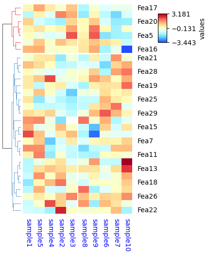

Colormap in PyComplexHeatmap
Default matplotlib colormaps¶


Build-in colormaps (Not included in matplotlib default cmaps)¶
In addition to the above matplotlib colormaps, PyComplexHeatmap also provide colormaps from package palettable (run pip install palettable before using palettable colormap). Users can use all those build-in colormaps after import PyComplexHeatmap
[1]:
import os,sys
%matplotlib inline
import matplotlib
import matplotlib.pylab as plt
sys.path.append(os.path.expanduser("~/Projects/Github/PyComplexHeatmap"))
import PyComplexHeatmap
print(PyComplexHeatmap.__version__)
from PyComplexHeatmap.colors import get_palettable_colors
1.7.2.dev0+g8abf70a.d20240415
[2]:
df=get_palettable_colors()
df
[2]:
| category | prefix | name | type | number | max_n | colors | hex_colors | mpl_colors | mpl_colormap | Name | |
|---|---|---|---|---|---|---|---|---|---|---|---|
| 1094 | sequential | Acton | Acton_20 | sequential | 20 | 20 | [(46, 33, 77), (59, 45, 88), (74, 58, 101), (8... | [#2E214D, #3B2D58, #4A3A65, #594672, #6A527E, ... | [(0.1803921568627451, 0.12941176470588237, 0.3... | <matplotlib.colors.LinearSegmentedColormap obj... | Acton |
| 1095 | sequential | Acton | Acton_20_r | sequential | 20 | 20 | [(230, 230, 240), (225, 216, 231), (219, 202, ... | [#E6E6F0, #E1D8E7, #DBCADD, #D7BDD4, #D5AFCB, ... | [(0.9019607843137255, 0.9019607843137255, 0.94... | <matplotlib.colors.LinearSegmentedColormap obj... | Acton_r |
| 272 | sequential | Algae | Algae_20 | sequential | 20 | 20 | [[215, 249, 208], [199, 237, 189], [181, 225, ... | [#D7F9D0, #C7EDBD, #B5E1A9, #A4D698, #92CB86, ... | [(0.8431372549019608, 0.9764705882352941, 0.81... | <matplotlib.colors.LinearSegmentedColormap obj... | Algae |
| 273 | sequential | Algae | Algae_20_r | sequential | 20 | 20 | [[18, 36, 20], [22, 47, 29], [24, 59, 38], [26... | [#122414, #162F1D, #183B26, #1A472E, #1A5336, ... | [(0.07058823529411765, 0.1411764705882353, 0.0... | <matplotlib.colors.LinearSegmentedColormap obj... | Algae_r |
| 308 | sequential | Amp | Amp_20 | sequential | 20 | 20 | [[241, 237, 236], [234, 221, 218], [228, 205, ... | [#F1EDEC, #EADDDA, #E4CDC6, #DFBEB3, #DBAE9F, ... | [(0.9450980392156862, 0.9294117647058824, 0.92... | <matplotlib.colors.LinearSegmentedColormap obj... | Amp |
| ... | ... | ... | ... | ... | ... | ... | ... | ... | ... | ... | ... |
| 2719 | qualitative | Vivid | Vivid_10_r | qualitative | 10 | 10 | [[237, 100, 90], [118, 78, 159], [47, 138, 196... | [#ED645A, #764E9F, #2F8AC4, #DAA51B, #24796C, ... | [(0.9294117647058824, 0.39215686274509803, 0.3... | <matplotlib.colors.LinearSegmentedColormap obj... | Vivid_r |
| 238 | sequential | agGrnYl | agGrnYl_7 | sequential | 7 | 7 | [[36, 86, 104], [15, 114, 121], [13, 143, 129]... | [#245668, #0F7279, #0D8F81, #39AB7E, #6EC574, ... | [(0.1411764705882353, 0.33725490196078434, 0.4... | <matplotlib.colors.LinearSegmentedColormap obj... | agGrnYl |
| 239 | sequential | agGrnYl | agGrnYl_7_r | sequential | 7 | 7 | [[237, 239, 93], [169, 220, 103], [110, 197, 1... | [#EDEF5D, #A9DC67, #6EC574, #39AB7E, #0D8F81, ... | [(0.9294117647058824, 0.9372549019607843, 0.36... | <matplotlib.colors.LinearSegmentedColormap obj... | agGrnYl_r |
| 250 | sequential | agSunset | agSunset_7 | sequential | 7 | 7 | [[75, 41, 145], [135, 44, 162], [192, 54, 157]... | [#4B2991, #872CA2, #C0369D, #EA4F88, #FA7876, ... | [(0.29411764705882354, 0.1607843137254902, 0.5... | <matplotlib.colors.LinearSegmentedColormap obj... | agSunset |
| 251 | sequential | agSunset | agSunset_7_r | sequential | 7 | 7 | [[237, 217, 163], [246, 169, 122], [250, 120, ... | [#EDD9A3, #F6A97A, #FA7876, #EA4F88, #C0369D, ... | [(0.9294117647058824, 0.8509803921568627, 0.63... | <matplotlib.colors.LinearSegmentedColormap obj... | agSunset_r |
186 rows à 11 columns
[3]:
import numpy as np
import matplotlib as mpl
import matplotlib.pyplot as plt
cmaps = {}
gradient = np.linspace(0, 1, 256)
gradient = np.vstack((gradient, gradient))
def plot_color_gradients(category, cmap_list):
# Create figure and adjust figure height to number of colormaps
nrows = len(cmap_list)
figh = 0.35 + 0.15 + (nrows + (nrows - 1) * 0.1) * 0.22
fig, axs = plt.subplots(nrows=nrows + 1, figsize=(6.4, figh))
fig.subplots_adjust(top=1 - 0.35 / figh, bottom=0.15 / figh,
left=0.2, right=0.99)
axs[0].set_title(f'{category} colormaps', fontsize=14)
for ax, name in zip(axs, cmap_list):
if isinstance(name,str):
cmap=mpl.colormaps[name]
text=name
else:
cmap=name
text=name.name
ax.imshow(gradient, aspect='auto', cmap=cmap)
ax.text(-0.01, 0.5, text, va='center', ha='right', fontsize=10,
transform=ax.transAxes)
N=cmap.N
if N < 256:
ax.text(1.01, 0.5, N, va='center', ha='left', fontsize=10,
transform=ax.transAxes)
# Turn off *all* ticks & spines, not just the ones with colormaps.
for ax in axs:
ax.set_axis_off()
# Save colormap list for later.
cmaps[category] = cmap_list
[4]:
plot_color_gradients('Sequential',df.loc[(df.category=='sequential') & (df.Name.apply(lambda x:not x.endswith('_r')))].sort_values('max_n').mpl_colormap.tolist())

[5]:
plot_color_gradients('Diverging',df.loc[(df.category=='diverging') & (df.Name.apply(lambda x:not x.endswith('_r')))].sort_values('max_n').mpl_colormap.tolist()+['parula'])
[6]:
# mpl.colormaps['parula']
[7]:
from matplotlib.colors import LinearSegmentedColormap, ListedColormap
df1=df.loc[(df.category=='qualitative') & (df.Name.apply(lambda x:not x.endswith('_r')))].sort_values('max_n')
plot_color_gradients('Qualitative',[ListedColormap(c,name=name) for c,name in zip(
df1.mpl_colors.tolist(),df1.Name.tolist())]+['nature3_1','nature3_2','nature3_3',
'nature4_1','nature4_2','nature4_3','nature4_4',
'nature5_1','nature5_2','nature6_1','nature6_2',
'random50','random100'])
[8]:
# mpl.colormaps['random50']
How to use the Build-in cmap?¶
Just set cmap="custom_cmap" in ClusterMapPlotter or all kinds of annotation
[41]:
from PyComplexHeatmap import *
df = pd.DataFrame(['GroupA'] * 5 + ['GroupB'] * 5, columns=['AB'])
df['CD'] = ['C'] * 3 + ['D'] * 3 + ['G'] * 4
df['EF'] = ['E'] * 6 + ['F'] * 2 + ['H'] * 2
df['F'] = np.random.normal(0, 1, 10)
df.index = ['sample' + str(i) for i in range(1, df.shape[0] + 1)]
df_heatmap = pd.DataFrame(np.random.randn(30, 10), columns=['sample' + str(i) for i in range(1, 11)])
df_heatmap.index = ["Fea" + str(i) for i in range(1, df_heatmap.shape[0] + 1)]
df_heatmap.iloc[1, 2] = np.nan
plt.figure(figsize=(3.5, 5))
cm = ClusterMapPlotter(
data=df_heatmap,
col_cluster=True,row_cluster=True,
col_split=df.AB,row_split=2,
col_split_gap=0.5,row_split_gap=0.8,
label='values',row_dendrogram=True,
show_rownames=False,show_colnames=True,
tree_kws={'row_cmap': 'Set1'},verbose=0,legend_gap=5,
cmap='Vik',xticklabels_kws={'labelrotation':-90,'labelcolor':'blue'},
ylabel="Features",xlabel="Samples")
# plt.savefig("example0.pdf", bbox_inches='tight')
plt.show()
A suffix â_râ could be added to all cmap to reverse the colormap, for example:
[47]:
plt.figure(figsize=(3.5, 5))
cm = ClusterMapPlotter(
data=df_heatmap,
col_cluster=True,row_cluster=True,
col_split=df.AB,row_split=2,
col_split_gap=0.5,row_split_gap=0.8,
label='values',row_dendrogram=True,
show_rownames=True,show_colnames=True,row_names_side='right',
tree_kws={'row_cmap': 'Set1'},verbose=0,legend_gap=5,
cmap='RedYellowBlue_r',xticklabels_kws={'labelrotation':-90,'labelcolor':'blue'}) #PuOr_r,RdYlGn_r
plt.show()
